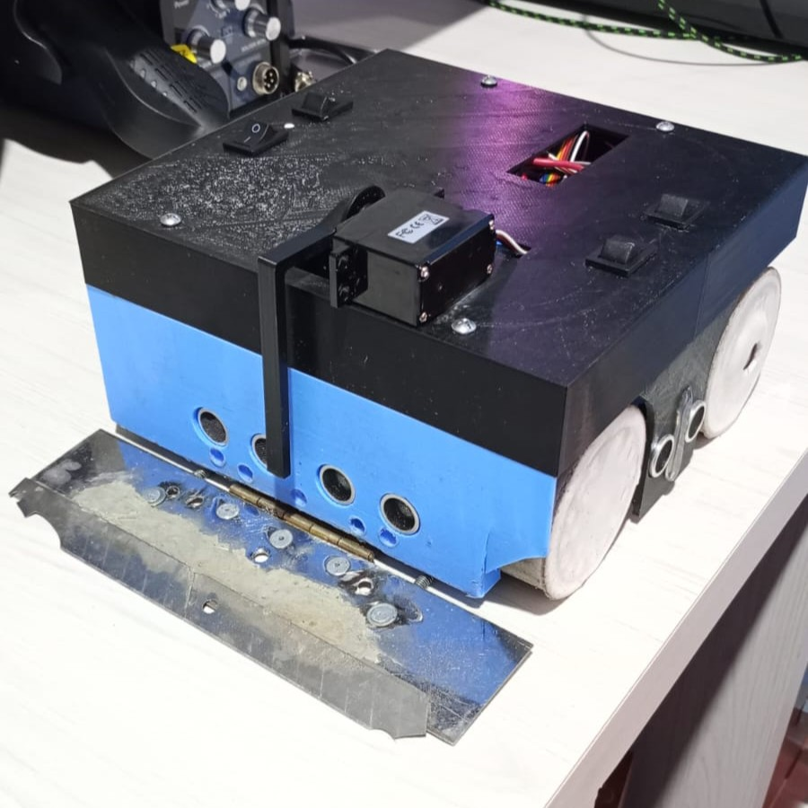
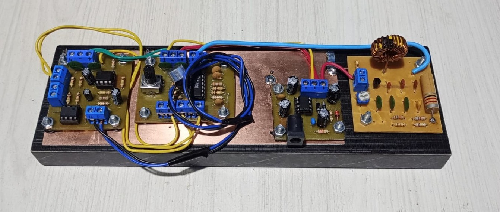
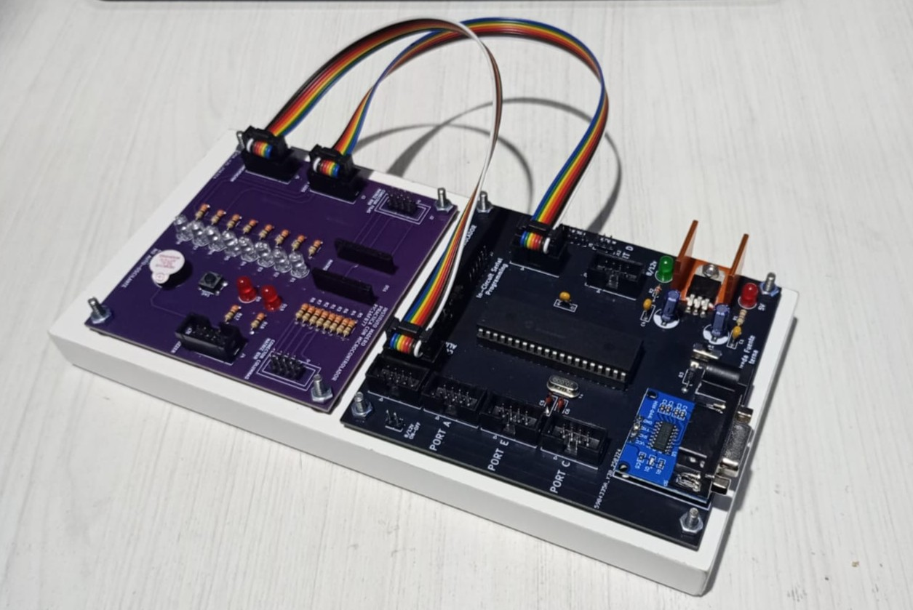
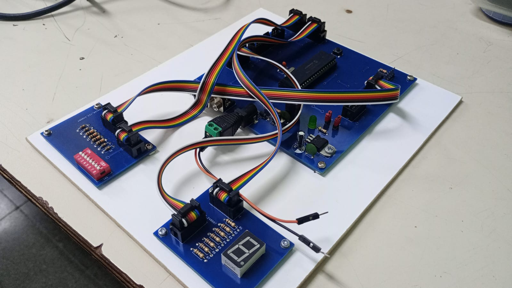
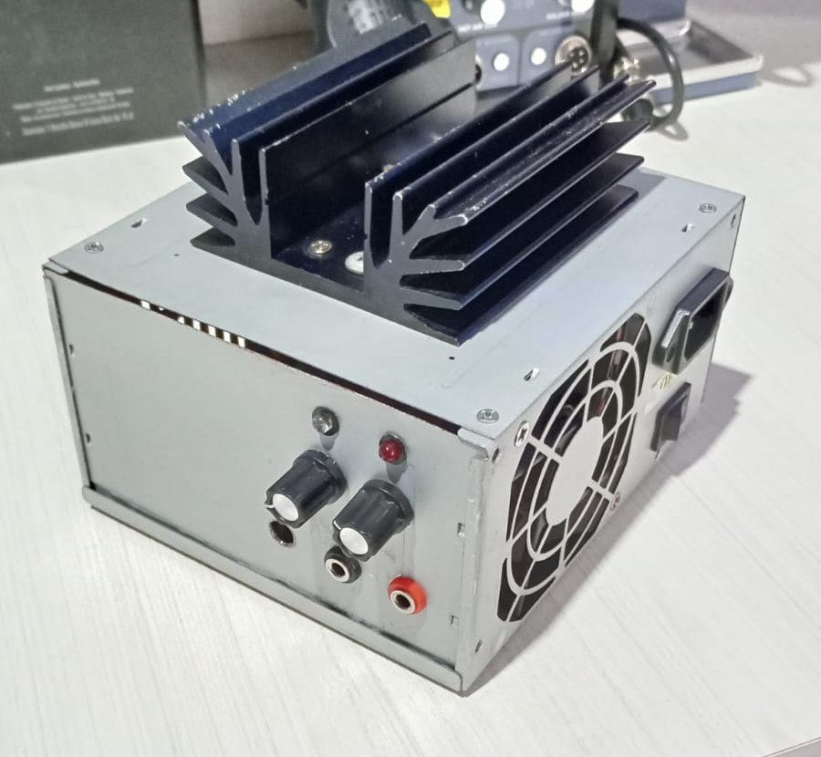
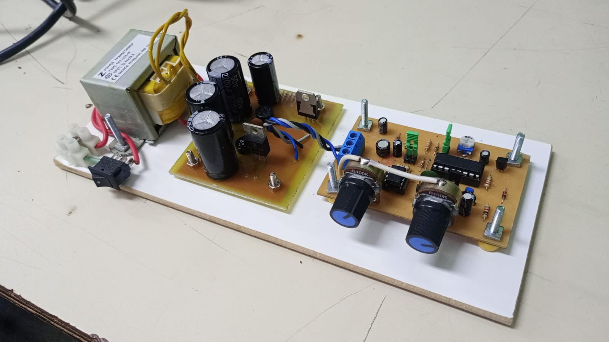
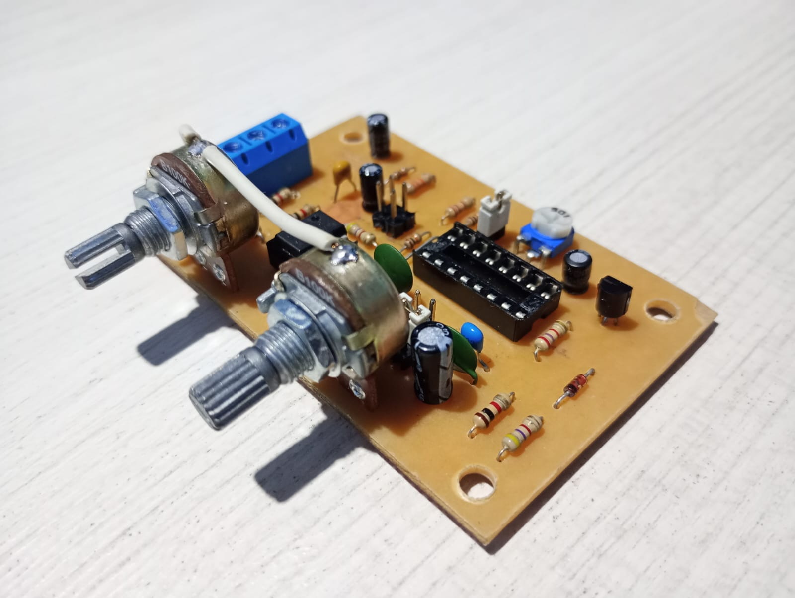
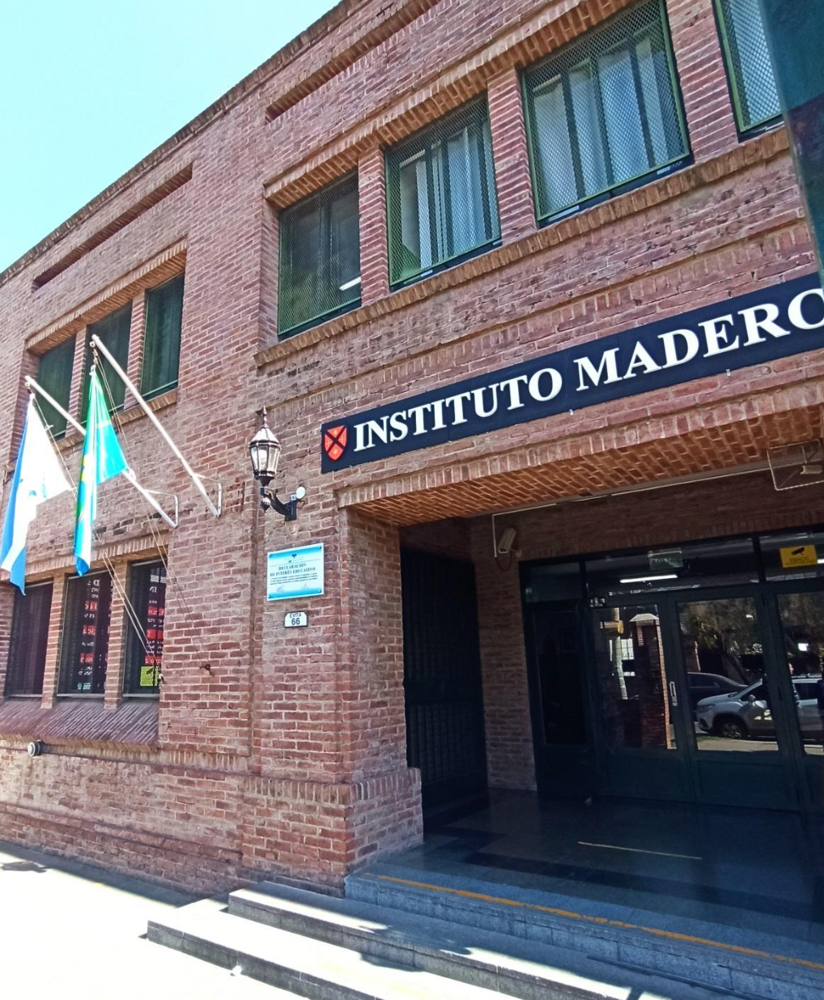

Electronics Technician · Telecommunications · Embedded Systems · PCB Design
Building reliable circuits from concept to prototype.
📄 Download My CVI am Facundo Jeremias Juarez, an Electronics Technician specializing in Telecommunications, currently completing my final year of technical secondary education. I hold a B2 (Intermediate) Cambridge English certification, a specialization in AutoCAD and a Cisco networking course.
I am a proactive and autodidact problem-solver with strong leadership and diagnostic capabilities. I thrive on troubleshooting complex hardware failures, leveraging hands-on experience with oscilloscopes, spectrum analyzers, and multimeters to identify root causes efficiently.
My technical stack bridges hardware and software: PCB design (KiCad and Proteus), embedded programming in C++ and Python (PIC16F877A, ESP32, Arduino), and communication protocols such as UART and MQTT. I am equally comfortable with THT soldering (proficient) and SMD soldering (basic), ensuring reliable prototypes from concept to physical board.
Beyond the classroom, I have successfully repaired over 20 consumer electronic devices as a freelancer, maintaining a ~90% success rate through systematic diagnostics. I have improved my professional skills as a technical intern at IE Service (Stromberg's official technical service), where I troubleshoot 10+ devices weekly, tested and informed about amplifier circuits and interact directly with customers.
I am seeking an entry-level role where I can leverage my hands-on experience in PCB design, embedded programming, and hardware troubleshooting to support the development of robust electronic systems. My goal is to contribute to a team that values precision, reliability, and continuous improvement in industrial and consumer electronics.
Context: A year-long collaborative project alongside a classmate, where we represented our school in regional SUMO robot competitions. The core objective was to consistently improve our ranking through rigorous iterative design.
Challenge: We faced continuous mechanical failures and strategic code inefficiencies across multiple tournaments. We had to rapidly redesign the chassis, rework the motor drivers, and optimize the obstacle-detection logic after each loss—all under tight competition deadlines.
Result: Through relentless iteration across several competitions, we climbed from being ranked among the bottom 8 robots (out of ~30 competitors) to consistently placing in the top 8. This measurable improvement sharpened my PCB routing speed, debugging methodology, and collaborative problem-solving under competitive time pressure.

Context: Developed this modulator as a deep dive into Amplitude Modulation principles in communication systems. The goal was to move beyond theory and build a functional transmitter, complete with calculations, that could eventually interface with an antenna.
Challenge: Noise coupling was a persistent issue that heavily distorted the modulated signal. The breakthrough came when I implemented a unified common ground plane that connected all the individual modules, drastically reducing the noise floor.
Result: Successfully generated a clean AM signal at 3.4MHz, verified using a spectrum analyzer. A comprehensive technical report documenting all mathematical calculations and design choices accompanies the physical prototype.

Context: A comprehensive two-year journey into microcontroller architecture. Starting with Assembly language to master direct pin-level control, I later transitioned to C++ to build a fully functional multi-board communication network via the UART protocol.
Challenge: The entire system was built from scratch. I had to design the PCBs in KiCad, write the embedded C++ firmware, and ensure robust, error-free serial data exchange between multiple boards—all without using pre-built commercial modules.
Result: Successfully developed custom PCBs and firmware that enable reliable serial data exchange between interconnected boards. This project cemented my understanding of low-level hardware-software interaction and serial communication protocols.


Context: I needed a versatile and reliable power source to test and power my growing collection of microcontroller projects and analog circuits, each requiring different voltage levels and current draws.
Challenge: The main design challenge was ensuring thermal stability and efficient heat dissipation while delivering up to 4A continuously. I had to balance a passive heatsink with active fan cooling to prevent the LM317 regulator and power transistor from overheating under heavy loads.
Result: The final prototype delivers a stable, adjustable 0-30V output with precise current limiting (max 4A). It has become my go-to bench tool for powering all my embedded systems projects safely, avoiding component damage due to overcurrent.

Context: This project was born from the need to generate precise test signals (sine, square, and triangle waves) for analyzing analog circuit responses during our communications and signal processing coursework.
Challenge: The greatest hurdle was the significant DC offset present in the square wave output. This offset made it useless for accurate AC measurements. I solved this by designing and integrating an active filter stage to eliminate the offset while preserving the waveform integrity.
Result: Achieved clean, stable waveforms across the entire 1Hz–1MHz frequency range. This generator now allows me to effectively test filters, amplifiers, and other audio-frequency circuits on my bench.


Overview: Comprehensive technical secondary education covering analog and digital electronics, telecommunications systems, and microcontrollers. The curriculum emphasizes both theoretical foundations and hands-on laboratory work.
Key Subjects: Analog/Digital Electronics, Telecommunications (AM/FM), Microcontrollers (PIC, Arduino), Signal Processing, Control Systems, and Industrial Instrumentation.
Final Year Project: Currently developing a multi-board UART communication network using custom PCBs designed in KiCad, integrating hardware and firmware skills acquired throughout the program.

Overview: Internationally recognized certification validating my ability to communicate effectively in professional and academic English environments. The exam assessed reading, writing, listening, and speaking skills at an upper-intermediate level.
Relevance to Electronics: This certification enables me to read complex technical datasheets, interpret international standards, write clear technical documentation, and communicate with global teams and clients in the electronics industry.
Overview: Complementary professional training focusing on computer hardware, operating systems, and network fundamentals. The course included hands-on training in PC assembly, software installation, and system troubleshooting.
Cisco Module: Introduction to networking concepts, including OSI model, IP addressing, and basic routing and switching principles—bridging the gap between electronics and IT infrastructure.
Overview: Focused training in computer-aided design (CAD) for technical drafting. The course covered 2D and 3D modeling, dimensioning, layer management, and the creation of standardized engineering drawings.
Application: I apply these skills to design mechanical enclosures for my electronic projects, create PCB footprints, and develop clear schematic diagrams for documentation and manufacturing.
Overview: School-organized internship at the official technical service center for Stromberg brand devices. Gained professional experience in a structured workshop environment.
Key Achievements:
Overview: Founded and managed a freelance electronics repair service, diagnosing and fixing a wide variety of consumer devices. Built a reputation for reliability and effective customer communication.
Key Achievements: